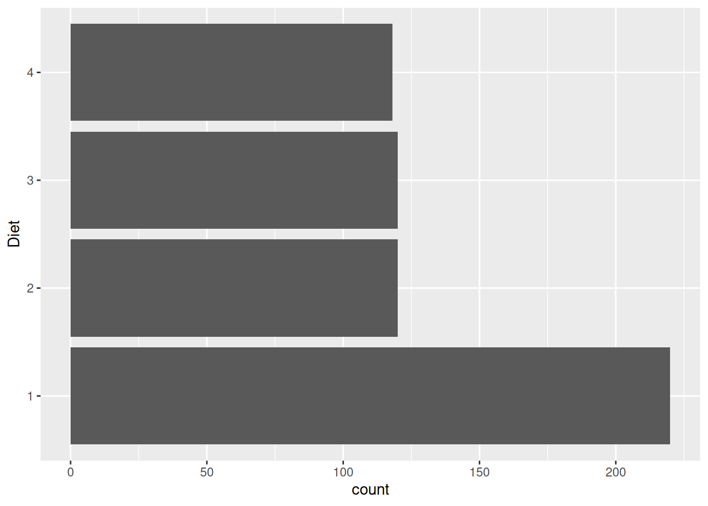
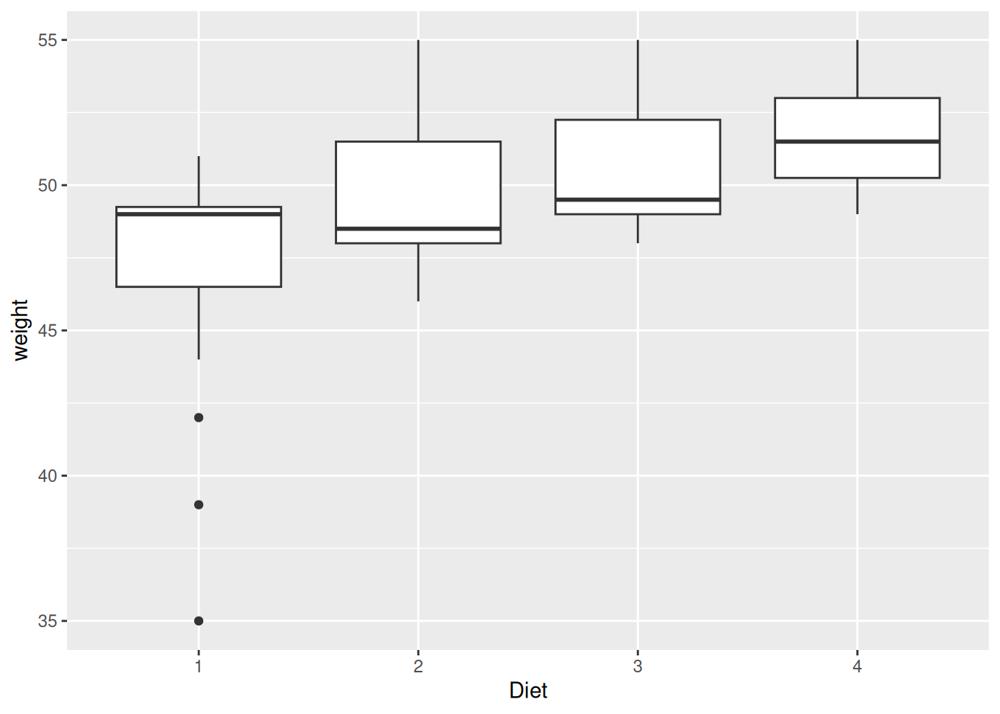
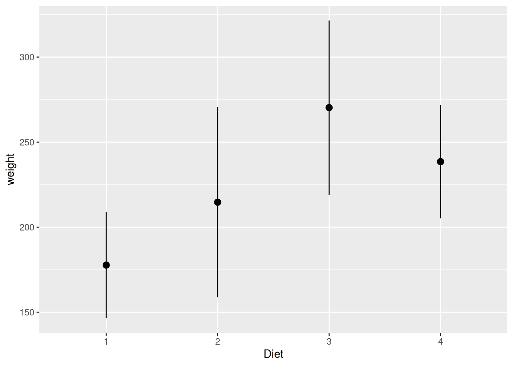
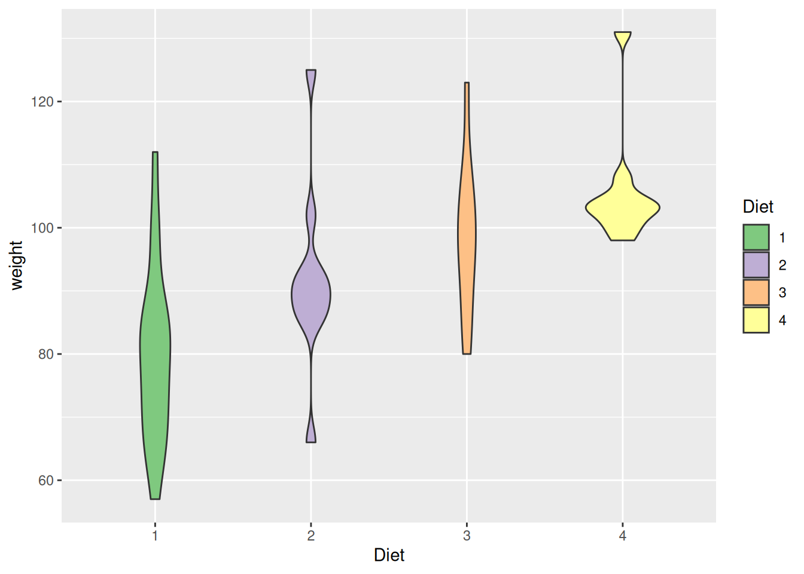
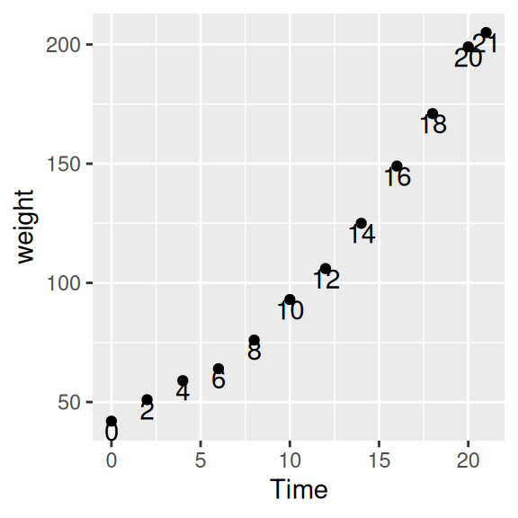
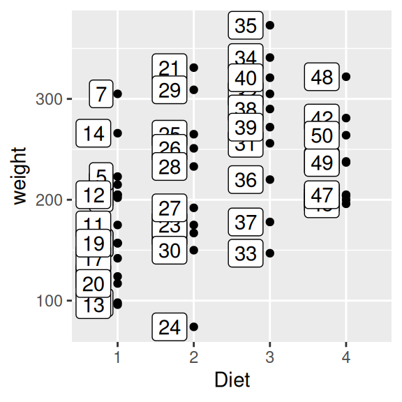
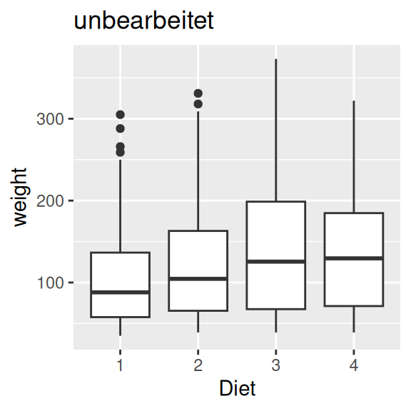
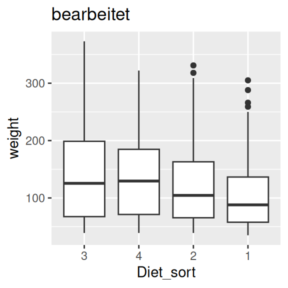

20 Grafiken
Zur Verbreitung von wissenschaftlichen Untersuchungen ist es sinnvoll, Rohdaten oder Ergebnisse von statistischen Analysen übersichtlich darzustellen, um diese besser kommunizieren zu können. Dabei sind Grafiken zumeist die Methode der Wahl. Gute Grafiken sind anschaulich, wirkungsvoll und lassen einen wichtige Informationen auf einen Blick erfassen.
Es gibt drei führende Pakete zum Erstellen von Grafiken in R:
- Basispaket graphics (Funktionen wie z.B.
plot()oderhist()) - Paket lattice
- Paket ggplot2
Im Rahmen dieses Kapitels werden wir uns auf ggplot2 konzentrieren. Mit diesem Paket haben wir eine große Bandbreite an Möglichkeiten, das Aussehen der Grafiken zu verändern. Außerdem können wir auf eine große Anzahl von verschiedenen Grafiken zurückgreifen wie z.B. den Violinenplot (siehe Abb. unten). Ein Violinenplot zeigt die Dichteverteilung eines metrischen Merkmals in Abhängigkeit eines kategorialen Merkmals.
Zuerst schauen wir uns die grundlegende Funktionsweise von ggplot an. Dann lernen wir, wie wir (bekannte) Grafiken erstellen und modifizieren können. Abschließend erfahren wir, wie wir Grafiken exportieren können. Am Ende befindet sich außerdem eine Auswahl weiterführender Hilfen, die für die Visualisierung der eigenen Daten nützlich sein können.
# Paket installieren ...
install.packages("ggplot2", dependencies=TRUE)
# ... und laden
library(ggplot2)Cheatsheet zu ggplot2
Um uns die Anwendung von ggplot2 zu erleichtern, können wir ein Cheatsheet in deutsch oder englisch herunterladen.
Auf der R-Studio Website gibt es noch mehr Cheat Sheets, v.a. zu tidyverse Paketen.
Alternativ finden wir die englischen Cheat Sheets auch direkt in R-Studio. Dazu gehen wir in der Menüleiste am oberen Bildschirmrand auf Help –> Cheatsheets.
Beispieldatensatzfür dieses Kapitel
Im Rahmen des Kapitels werden wir hauptsächlich mit dem Datensatz ChickWeight arbeiten, der standardmäßig im Basispaket datasets enthalten ist. Wir laden den Dataframe folgendermaßen in unseren Workspace:
data(ChickWeight)Die Daten stammen aus einem Experiment, in dem der Einfluss des Futters auf das Wachstum von Küken untersucht wurde.
weight Time Chick Diet
1 42 0 1 1
2 51 2 1 1
3 59 4 1 1
4 64 6 1 1
5 76 8 1 1
6 93 10 1 1Der Datensatz enthält vier Variablen. Mehr Informationen zu den Variablen finden wir hier.
weight: Körpergewicht eines Kükens in GrammTime: Tage seit der Geburt des KükensChick: Identifikationsnummer des KükensDiet: Nummer der Futtergruppe (1, 2, 3, 4)
Für den Abschnitt zu Visualisierungsmöglichkeiten bei mehr als zwei Variablen nutzen wir zusätzlich noch den Datensatz mpg, welcher im Paket ggplot2 enthalten ist.
Wir laden diesen folgendermaßen in unser Environment:
mpg <- mpg# A tibble: 6 × 11
manufacturer model displ year cyl trans drv cty hwy fl class
<chr> <chr> <dbl> <int> <int> <chr> <chr> <int> <int> <chr> <chr>
1 audi a4 1.8 1999 4 auto(l5) f 18 29 p compa…
2 audi a4 1.8 1999 4 manual(m5) f 21 29 p compa…
3 audi a4 2 2008 4 manual(m6) f 20 31 p compa…
4 audi a4 2 2008 4 auto(av) f 21 30 p compa…
5 audi a4 2.8 1999 6 auto(l5) f 16 26 p compa…
6 audi a4 2.8 1999 6 manual(m5) f 18 26 p compa…?mpg.
20.1 Bevor es losgeht
Bevor wir uns in ggplot2 vertiefen, wollen wir überprüfen, ob unsere Daten in der benötigten Datenstruktur vorliegen. Außerdem lernen wir einige Webseiten kennen, die uns dabei helfen, uns für eine Art der Visualisierung unserer Daten zu entscheiden.
20.1.1 Richtiges Datenformat
Bevor es losgehen kann, müssen wir erst einmal sicherstellen, dass unsere Daten auch in adäquater Form vorliegen. Um Grafiken mit ggplot() erzeugen zu können, müssen alle genutzen Variablen in einem gemeinsamen Dataframe vorliegen.
Das können wir folgendermaßen überprüfen:
is.data.frame(ChickWeight)
## [1] TRUEFalls unser Datensatz nicht als Dataframe vorliegt, könnten wir ihn so umwandeln:
ChickWeight <- as.data.frame(ChickWeight)In Abhängigkeit der eigenen Fragestellung müssen die Daten im Long- bzw. Wide-Format vorliegen. Schauen wir uns den Unterschied einmal an der Fragestellung, wie sich das Gewicht der Küken (weight) zu unterschiedlichen Zeitpunkten (Time) verändert, an.
Wenn wir Time als Prädiktor für weight aufnehmen möchten, müssen die Daten im Long-Format vorliegen, damit Time auch als eigene Variable kodiert ist.
Wenn wir uns hingegen für eine Veränderung des Gewichts von Tag 0 (Time 0) zu Tag 2 (Time 2) interessieren, müssen die Daten im Wide-Format vorliegen, damit die Gewichtsdaten zu den Messzeitpunkten in einzelnen Spalten (Variablen) vorliegen.
Wenn wir wissen wollen, wie wir Daten vom Wide- ins Long-Format (oder vice versa) bekommen, dann können wir unser Kapitel dazu anschauen.
Außerdem kann es Probleme geben, wenn nominal- oder ordinalskalierte Variablen (z.B. Diet) im Datensatz nicht als Faktor vorliegen. Mit str() können wir uns anschauen, in welchem Daten- bzw. Objekttyp die Variablen eines Dataframes vorliegen.
str(ChickWeight) # überprüfenClasses 'nfnGroupedData', 'nfGroupedData', 'groupedData' and 'data.frame': 578 obs. of 4 variables:
$ weight: num 42 51 59 64 76 93 106 125 149 171 ...
$ Time : num 0 2 4 6 8 10 12 14 16 18 ...
$ Chick : Ord.factor w/ 50 levels "18"<"16"<"15"<..: 15 15 15 15 15 15 15 15 15 15 ...
$ Diet : Factor w/ 4 levels "1","2","3","4": 1 1 1 1 1 1 1 1 1 1 ...
- attr(*, "formula")=Class 'formula' language weight ~ Time | Chick
.. ..- attr(*, ".Environment")=<environment: R_EmptyEnv>
- attr(*, "outer")=Class 'formula' language ~Diet
.. ..- attr(*, ".Environment")=<environment: R_EmptyEnv>
- attr(*, "labels")=List of 2
..$ x: chr "Time"
..$ y: chr "Body weight"
- attr(*, "units")=List of 2
..$ x: chr "(days)"
..$ y: chr "(gm)"Mit factor() können wir einzelne Spalten faktorisieren.
ChickWeight$Diet <- factor(ChickWeight$Diet) # umwandeln
# Diet lag bereits vorher als ungeordneter Faktor vor20.1.2 Welche Grafik sollte ich für meine Daten nehmen?
Falls wir noch auf der Suche nach einer informativen und ansprechenden Grafik für unsere Daten seid, können wir uns einen Überblick über geeignete Grafiken auf from Data to Viz verschaffen.
Für mehr Inspiration (sowie teilweise auch den R-Code) können wir auf den folgenden zwei Seiten nachschauen:
Auf R Graph Gallery finden wir verschiedene Grafiken nach Oberbegriffen (z.B. Zusammenhänge, Korrelation) sortiert und unterteilt in bestimmte Arten von Grafiken (z.B. Histogramm, Korrelogramm). Wenn wir auf die jeweilige Grafik klicken, kommen wir auf eine Seite, auf der es eine Definition und mehrere Beispielgrafiken, teils mit R-Code, gibt. Wir finden hier auch nicht nur Grafiken, die mit ggplot erstellt wurden.
Auf Top 50 ggplot2 Visualizations - The Master List finden wir auch eine gute Übersicht möglicher ggplot-Grafiken für verschiedene Anliegen (z.B. Korrelation, Variation, Veränderung) mit den dazugehörigen R-Codes. Wir finden hier auch sehr einzigartige Visualisierungen wie z.B. Dendrogramme.
20.2 Grundlegender Aufbau von ggplot()
Das gg in ggplot() steht für grammar of graphics. ggplot strebt einen intuitiven Ansatz zur Erstellung von Grafiken an. Die essenziellen drei Komponenten, die wir zur Erstellung jeder Grafik benötigen, sind:
- Datensatz
Diesen übergeben wir an das Argumentdata. - ästhetische Mappings (aesthetics)
Diese werden inaes()festgelegt. Dazu gehören u.a. die x- und y-Dimensionen, Farben und Größe. - geometrische Objekte (geoms)
Diese werden ingeom()festgelegt. Die Formen, mit denen die Daten dargestellt werden, sind z.B. Punkte, Linien, Balken.
Die Besonderheit an ggplot ist, dass wir verschiedene Ebenen übereinander legen. Diese Ebenen verbinden wir syntaktisch jeweils mit einem +. Das Grundgerüst ist dabei das Koordinatensystem (1. Ebene) und die Art der Grafik, die wir mittels geometrischer Objekt festlegen (2. Ebene). Zusätzlich können wir diese beiden Ebenen modifizieren (z.B. Farben der geometrischen Objekte ändern) und ebenso neue Ebenen ergänzen (z.B. Beschriftung).
Die Ebenen können wir auch als Teilfunktionen begreifen, die eine Grafik konstituieren. Was wir z.B. bei plot(..., main="...") in einer Funktion realisieren können (das Koordinatensystem, die Art der Grafik - ein Streudiagramm - und die Beschriftung) machen wir in ggplot mit mehreren Teilfunktionen (ggplot() + geom_point() + ggtitle()).
20.2.1 Ebene 1: Grundlegendes Koordinatensystem
Das Koordinatensystem spezifizieren wir mit ggplot(). Dem Parameter data übergeben wir den Datensatz (1). Das ästhetische Mapping (2) legen wir mit aes() fest. Diesem geben wir die Namen der Variablen, die auf der x- und y-Achse dargestellt werden sollen.
ggplot(data=ChickWeight, aes(x=Time, y=weight))
Wie bei anderen Funktionen können wir die Parameterbezeichnung data, x und y weglassen und nur die Argumente (d.h. die Namen des Datensatzes bzw. der Variablen) angeben. Bei x und y müssen wir dann aber unbedingt die Reihenfolge einhalten: ggplot(ChickWeight, aes(Time, weight)).
20.2.2 Ebene 2: Art der Grafik
Bisher wurde nur das Koordinatensystem mit den jeweiligen Achsengrenzen der Variablen erstellt. Wenn wir die Daten nun plotten möchten, müssen wir noch festlegen, wie die Daten dargestellt werden sollen (z.B. die Häufigkeit als Balken, die bivariate Verteilung als Punkte). Dazu nutzten wir geometrische Objekte(3), die wir mit den geom-Funktionen festlegen (z.B. geom_line() für Linien oder geom_bar() für Balken). Damit ergänzen wir den Plot um eine neue Ebene.
ggplot(data=ChickWeight, aes(x=Time, y=weight)) +
geom_point()
Nachdem wir uns nun mit dem grundlegenden Aufbau von ggplot() vertraut gemacht haben, schauen wir uns nun an, wie wir spezifische Arten von Grafiken erstellen.
20.3 Eine Variable
Zuerst schauen wir uns an, wie wir die Häufigkeitsverteilung einer Variablen visualisieren können.
20.3.1 Kategorial
Hierfür nehmen wir die Variable Diet. Diese kodiert die Gruppen, in denen das Futter der Küken variiert wurde.
Später erfahren wir noch, wie wir die Reihenfolge und Benennung von kategorialen Variablen ändern können.
20.3.1.1 Balkendiagramm
Um ein Balkendiagramm zu erzeugen, nutzen wir geom_bar(). Standardmäßig werden mit geom_bar() absolute Häufigkeiten (count) geplottet.
ggplot(data=ChickWeight, aes(x=Diet)) +
geom_bar()
Wir können folgendermaßen auch die relativen Häufigkeiten (prob) plotten:
ggplot(data=ChickWeight, aes(x=Diet)) +
geom_bar(aes(y = after_stat(prop), group=1))Mit + coord_flip() können wir das Diagramm um 90° nach rechts kippen. Jetzt ist auf der x-Achse die Häufigkeit und auf der y-Achse die Gruppierung abgebildet.
ggplot(data=ChickWeight, aes(x=Diet)) +
geom_bar() +
coord_flip()
Wir können auch sogenannte gestapelte Balkendiagramme (stacked bar plots) anfertigen.
Dazu müssen erst einen neuen Dataframe erzeugen, in welchem die Gruppennamen sowie die (absoluten) Häufigkeiten der Variablen je als neue Variable gespeichert sind.
# Häufigkeitstabelle von Diet erstellen und in Dataframe konvertieren:
freq_Diet <-as.data.frame(table(ChickWeight$Diet))
# (optional) Spalten umbenennen:
colnames(freq_Diet) <- c("Futtergruppe", "Häufigkeit")Mit diesem Dataframe erstellen wir nun ein gestapeltes Balkendiagramm:
ggplot(data=freq_Diet, aes(x="", y=Häufigkeit, fill=Futtergruppe)) +
geom_bar(stat = "identity")Mehr Informationen zur Erstellung von gestapelten sowie auch gruppierten Balkendiagrammen finden wir hier. Beide Grafiken eignen sich auch gut, um Gruppierungskombinationen mit noch einer weitere kategorialen Variablen darzustellen.
20.3.1.2 Kreisdiagramm
Um ein Kreisdiagramm zu erstellen, müssen wir, analog zur Erstellung von gestapelten Balkendiagrammen, zuerst einen neuen Dataframe erzeugen, in welchem die Namen und (absoluten) Häufigkeiten der Gruppen der Variablen als neue Variablen vorhanden sind.
# Häufigkeitstabelle von Diet erstellen und in Dataframe konvertieren:
freq_Diet <-as.data.frame(table(ChickWeight$Diet))
# (optional) Spalten umbenennen:
colnames(freq_Diet) <- c("Futtergruppe", "Häufigkeit")Auch das weitere Vorgehen überschneidet sich weitest mit dem der Erstellung eines gestapelten Balkendiagrammes. Wir müssen lediglich noch + coord_polar("y") ergänzen, damit die Anteile der Häufigkeiten in Polarkoordinaten überführt werden.
ggplot(data=freq_Diet, aes(x="", y=Häufigkeit, fill=Futtergruppe)) +
geom_bar(stat = "identity") +
coord_polar("y")
Auf dieser Seite finden wir weitere Hilfe zur Erstellung und Modifikation von Kreisdiagrammen.
20.3.2 Metrisch
Beispielhaft schauen wir uns hierfür das Gewicht der Küken (weight) an.
20.3.2.1 Histogramm
Mit Hilfe von Histogrammen können wir uns die Verteilung einer metrischen Variablen anschauen. Um ein Histogramm zu erstellen, nutzen wir geom_histogram().
Richtlinien zur Kategorisierung einer metrischen Variablen
Bevor wir eine metrische Variable zum Zwecke der grafischen Darstellung kategorisieren, sollten wir uns Gedanken über die Anzahl und Breite der Kategorien machen, in die wir die Daten einteilen möchten. Es ist meist nicht sinnvoll, die Häufigkeiten der Rohwerte von metrischen Variablen zu plotten, weil identische Messwerte selten vorliegen. Daher ist es sinnvoll, die Rohdaten zu gruppieren. Dazu müssen wir uns Gedanken über die Intervallgröße dieser Kategorien machen (“Problem der Kategorisierung”). Durch Vergrößerung gehen (relevante) Informationen verloren; durch Verkleinerung bleiben (zu viele) idiosynkratische Merkmale erhalten.
Prinzipiell gilt:
- Je größer eine Stichprobe ist, desto schmaler können die einzelnen Kategorien sein (d.h. mehr Kategorien).
- Als Orientierung können wir hierfür die Sturges Regel nutzen:
\(m ≈ 1 + 3.32 \cdot lg(N)\) (\(m\) = Anzahl der Kategorien, \(N\) = Stichprobengröße, \(lg\) = dekadischer Logarithmus)
- Als Orientierung können wir hierfür die Sturges Regel nutzen:
Schauen wir uns die ungefähre Anzahl der Kategorien nach der Sturges Regel an. Dazu nutzen wir die Funktion nclass.Sturges(1:Stichprobengröße).
# Gibt es fehlende Werte?
anyNA(ChickWeight$weight) [1] FALSE## wenn nein:
nclass.Sturges(1:nrow(ChickWeight))[1] 11## wenn ja:
# nclass.Sturges(1:table(is.na(ChickWeight$weight))[[2]])
# table(is.na(ChickWeight$weight))[[2]] gibt uns die Anzahl der vorhanden werteNach Sturges Regel sollten wir für weight in etwa 11 Kategorien bilden.
- Je größer die Streuung der Variablen, desto breiter können die einzelnen Kategorien sein (d.h. weniger Kategorien).
min(ChickWeight$weight) # kleinster Wert[1] 35max(ChickWeight$weight) # größter Wert[1] 373# Variationsbreite (Streuung) = größter minus kleinster Wert:
max(ChickWeight$weight) - min(ChickWeight$weight) [1] 338# bei Vorhandensein von fehlenden Werten:
# min(..., na.rm=TRUE) bzw. max(..., na.rm=TRUE)Es ist sinnvoll, zuerst nach Sturges Regel eine Anzahl an Bins zu errechnen, und diese dann ggf. in Abhängigkeit der Variationsbreite des Merkmals zu verändern.
Generell sollten wir nicht mehr als 20 Kategorien bilden. Diese sollten im Regelfall auch ungefähr die gleiche Breite aufweisen.
Wir erstellen ein Histogramm von weight mit den empfohlenen 11 Kategorien, welche wir mit dem Argument bins erstellen.
ggplot(data=ChickWeight, aes(x=weight)) +
geom_histogram(bins=11)
Problem der korrekten Darstellung der Variationsbreite
Grundsätzlich ist es, sowohl in base graphics als auch in ggplot, problematisch, den wahren Range (d.h. die Variationsbreite) einer Variablen darzustellen. Ohne explizite Eingabe der Grenzen werden diese leider nicht berücksichtigt. Das kann zu einem falschen Eindruck der Variationsbreite der Variablen führen.
Dieses Problem demonstrieren wir einmal an obigem Beispiel.
Mit geom_vline(xintercept) erstellen wir zwei vertikale Linien, die den kleinsten bzw. größten beobachteten Wert von weight markieren. Diese nutzen wir zur Veranschaulichung der Problematik.
ggplot(data=ChickWeight, aes(x=weight)) +
geom_histogram(bins=11) +
geom_vline(xintercept=min(ChickWeight$weight)) + # kleinster Wert
geom_vline(xintercept=max(ChickWeight$weight)) # größter Wert
Wie wir sehen haben wir zwar die gewünschten 11 Kategorien, aber diese sind leider so eingeteilt, dass die äußeren Kategorien über den kleinsten und größten beobachteten Wert von weight hinausgehen (d.h. sie sind zu groß).
Um das Problem in den Griff zu bekommen, nutzen wir das Argument breaks, mit dem wir die Kategoriengrenzen manuell festlegen. Diesem übergeben wir die Funktion seq(from, to, by), die uns eine reguläre Sequenz erstellt (damit wir nicht alle Grenzen einzeln eingeben müssen). Auch hier wollen wir wieder die empfohlenen 11 Kategorien haben, daher teilen wir den Range (373-35) von weight durch 11.
ggplot(data=ChickWeight, aes(x=weight)) +
geom_histogram(breaks=seq(35, 373, (373-35)/11)) +
geom_vline(xintercept=min(ChickWeight$weight)) + # kleinster Wert
geom_vline(xintercept=max(ChickWeight$weight)) # größter Wert
weight ein.
Weiterführend finden wir zusätzliche Modifikationen für Histogramme auf dieser Seite.
20.3.2.2 Dichtefunktion
Die Dichteverteilung einer kontinuierlichen Variablen können wir mit geom_density() einzeichnen. Per Default wird dafür die Gaußsche Dichtefunktion (kernel = "gaussian") genutzt.
ggplot(data=ChickWeight, aes(x=weight)) + geom_density()
20.4 Zwei Variablen
Nun schauen wir uns die grafische Darstellung von Zusammenhängen zwischen zwei Variablen an.
20.4.1 X kategorial, Y metrisch
Später erfahren wir noch, wie wir die Reihenfolge und Benennung von kategorialen Variablen ändern können.
20.4.1.1 Boxplot
Wenn wir uns die Merkmalsverteilung einer metrischen Variable in Abhängigkeit einer kategorialen Variablen anschauen möchten, können wir Boxplots nutzen.
Welche Kennwerte werden in Boxplots dargestellt?
In Boxplots werden mehrere deskriptiv-statistische Kennwerte dargestellt:
- zentrale Tendenz:
- Median: dargestellt durch die dicken, horizontalen Linien in den Boxen
- Variabilität:
- Interquartilsrange (IQR): mittlere 50% der Verteilung, dargestellt durch die Boxen
- Whisker: größter bzw. kleinster beobachteter Wert innerhalb der oberen bzw. unteren Ausreißergrenzen, dargestellt durch die vertikale Linien an den Boxen
- Ausreißer: einzelne Beobachtungen außerhalb der Whisker, dargestellt durch Punkte
Einen Boxplot erhalten wir mit geom_boxplot(). Wenn wir fehlende Werte in unseren Daten haben, müssen wir noch das Argument na.rm = TRUE ergänzen, welches diese (aus der Grafik) entfernt.
Wir schauen uns das Gewicht der Küken (weight) zum zweiten Messzeitpunkt (Time 2) in Abhängigkeit der Fütterung (Diet) an.
ggplot(data=ChickWeight[ChickWeight$Time == 2,], aes(x=Diet, y=weight)) +
geom_boxplot()
Erweiterte Indexierung: Wie können wir nur bestimmte Daten (z.B. nur Daten zum zweiten Messzeitpunkt) für ggplot() auswählen?
Wenn wir nicht alle Daten, sondern nur solche, auf die bestimmte Bedingungen zutreffen, auswählen wollen, können wir dazu die Indexierung mittels der eckigen Klammern [] nutzen.
Für unser Beispiel wollen wir uns nur die Daten des zweiten Messzeitpunkts (Time 2) anschauen. Formal würde (nur) die Bedingung so aussehen: ChickWeight$Time == 2. Diese wollen wir noch auf unseren Dataframe anwenden; dazu nutzen wir die eckigen Klammern: ChickWeight[ChickWeight$Time == 2,].
Mit dem Komma legen wir fest, welche der beiden Dimensionen unseres Dataframes wir meinen (Zeile, Spalte). Weil wir Fälle mit bestimmten Ausprägungen (Bedingungen) auswählen wollen, setzen wir das Komma am Ende.
Zu beachten ist außerdem, dass wir die Indexierung bereits in der grundlegenden Ebene, d.h. inggplot(data, ...), festlegen müssen. Zu Beginn haben wir gelernt, dass wir durch die Übergabe des Dataframes an ggplot(data, ...) das grundlegende Koordinatensystem erstellen und damit die Anzahl der Datenpunkte (Beobachtungen) festlegen. Folglich würde es nicht funktionieren, die Selektion erst in einer späteren Ebene vorzunehmen, weil die an Anzahl der Datenpunkte sich unterscheiden würde.
20.4.1.2 Violinenplot
Der Violinenplot ist eine Variante von Boxplots, in dem die Dichtefunktion eines metrischen Merkmals grafisch dargestellt wird. Diese wird an der Senkrechten zur x-Achse gespiegelt.
Um die Grafiken mit dem Boxplot aus dem letzten Abschnitt vergleichen zu können, schauen wir uns hier ebenfalls das Gewicht der Küken (weight) zum zweiten Messzeitpunkt (Time 2) in Abhängigkeit der Diät (Diet) an.
Generell können wir den Violinenplot mit geom_violin() erstellen. Zusätzlich gibt es hier einen sehr wichtigen Parameter: scale. Mit diesem legen wir fest, ob die einzelnen “Violinen” in der gleichen Größe (area; voreingestellt) oder in Größen proportional zur Anzahl der Beobachtungen in jeder Gruppe (count) dargestellt werden sollen.
Wir schauen uns unsere Daten einmal in beiden Modi an.
ggplot(data= ChickWeight[ChickWeight$Time == 2,], aes(x=Diet, y=weight)) +
geom_violin(scale = "area")
ggplot(data=ChickWeight[ChickWeight$Time == 2,], aes(x=Diet, y=weight)) +
geom_violin(scale = "count")

Wir sehen, dass die Größen derselben “Violinen” sich in den beiden Grafiken unterscheiden. Das liegt daran, dass bei ersterer Grafik (scale=area) die Anzahl der Beobachtungen pro Gruppe unbeachtet bleibt, während sie in zweiter Grafik (scale=count) über die relative Größe der “Violinen” visualisiert wird. Wenn wir gleich große Gruppen hätten, würden wir keinen Unterschied zwischen den beiden Grafiken erkennen.
20.4.1.3 Gruppenmittelwerte visualisieren
Im Folgenden schauen wir uns die finalen (Time 21) Mittelwerte des Gewichts der Küken (weight) in den einzelnen Futtergruppen (Diet) an. Dabei wollen wir außerdem die 95%-Konfidenzintervalle für die einzelnen Mittelwerte einzeichnen.
Wenn wir aggregierte Daten einer statistischen Analyse (z.B. Gruppenmittelwerte bei einem \(t\)-Test) darstellen möchten, ist ein weit verbeiteter Ansatz, Balkendiagramme mit Fehlerbalken zu nutzen.

Achtung: Das Problem bei diesem Ansatz ist, dass Personen dazu neigen, die Werte (innerhalb des 95% Konfidenzintervalls), die innerhalb der Balken liegen, als statistisch wahrscheinlicher wahrzunehmen als jene, die außerhalb der Balken liegen. Dieses Phänomen ist als Within-the-bar Bias bekannt. Es ist daher sinnvoll, für die Darstellung von Mittelwerten keine Balkendiagramme zu nutzen, sondern auf geeignetere Visualisierungen zurückzugreifen.
Beispielsweise vermitteln einzelne Punkte (für die Mittelwerte) mit Fehlerbalken die relevanten Informationen besser.
Generell um statistische Kennwerte zu ergänzen, nutzen wir die Funktion stat_summary() (mehr dazu hier). Mit fun.data="mean_cl_normal" bekommen wir Mittelwerte mit 95% Konfindenzintervallen.
ggplot(data=ChickWeight[ChickWeight$Time == 21,], aes(x=Diet, y=weight)) +
stat_summary(fun.data="mean_cl_normal")
Wenn wir zusätzlich noch unsere Informationsdichte erhöhen wollen, d.h. nicht nur den Mittelwert, sondern die Verteilung in den einzelnen Gruppen visualisieren wollen, können wir Violinenplots integrieren.
ggplot(data=ChickWeight[ChickWeight$Time == 21,], aes(x=Diet, y=weight)) +
geom_violin(scale="count") + stat_summary(fun.data="mean_cl_normal")
# Reihenfolge beachten! erst Violinenplot, dann Mittelwerte darüber
20.4.2 X und Y metrisch
20.4.2.1 Streudiagramm
Mit Streudiagrammen (Scatterplots) können wir Wertepaare zweier kontinuierlicher Variablen grafisch darstellen. Das machen wir mit geom_point().
Wir schauen uns im Folgenden den Zusammenhang von Zeit seit dem Schlüpfen (Time) und dem Gewicht in Gramm (weight) der Küken an.
ggplot(data=ChickWeight, aes(x=Time, y=weight)) +
geom_point()
20.4.2.2 Overplotting vermeiden
Wenn wir sehr große Datensätze haben, könnten wir das Problem haben, dass wir individuelle Daten optisch nicht mehr gut unterscheiden können, weil viele Datenpunkte übereinander liegen. Dieses Problem nennt man auch Overplotting. Im Folgenden schauen wir uns einige Möglichkeiten an, wie wir das Problem beheben können.
Hierfür schauen wir uns wieder den Zusammenhang von Zeit seit dem Schlüpfen (Time) und dem Gewicht in Gramm (weight) der Küken an.
20.4.2.2.1 Punkte modifizieren
Wir können die Formen verkleinern mit dem Parameter size (Breite der Linie in mm), …
ggplot(data=ChickWeight, aes(x=Time, y=weight)) +
geom_point(size = 0.1)
… die Form ändern mit dem Parameter shape, …
ggplot(data=ChickWeight, aes(x=Time, y=weight)) +
geom_point(shape = 1)
… oder die Form transparent machen mit dem Parameter alpha (0 < alpha < 1).
ggplot(data=ChickWeight, aes(x=Time, y=weight)) +
geom_point(alpha = 0.1)
20.4.2.2.2 Jittern
“Jittern” heißt, dass wir etwas zufälliges Rauschen einfügen, damit die Datenpunkte etwas voneinander abweichen.
Achtung: Weil wir hiermit aber einen falschen Eindruck von den Daten vermitteln könnten, sollten wir die Verwendung von gejitterten Daten immer kennzeichnen.
Per default werden die Punkte in 80% der Breite der implizierten Bins (z.B. der Bin von Time 0) geplottet, sodass die Bins optisch noch gut voneinander zu trennen sind. Mit dem Parameter width können wir die Breite anpassen.
ggplot(data=ChickWeight, aes(x=Time, y=weight)) +
geom_jitter()
# mehr (aber zu viel) Variation:
ggplot(data=ChickWeight, aes(x=Time, y=weight)) + geom_jitter(width=1) 
Es gibt noch weitere Möglichkeiten Overplotting zu vermeiden. Auf dieser Seite finden wir noch andere Beispiele sowie ihre Umsetzung in R.
20.4.2.3 Regressionsgerade einzeichnen
Wir können unsere bivariaten Daten zusätzlich noch durch eine Funktion beschreiben lassen. Häufig nutzen wir dafür Regressionsmodelle.
Die Regressionsgerade eines einfachen linearen Regressionsmodells können wir mit geom_smooth(method="lm") über unser Streudiagramm legen.
Per default wird nicht nur eine Regressionsgerade eingezeichnet, sondern auch das 95%-Konfidenzintervall um die Gerade gelegt.
ggplot(data=ChickWeight, aes(x=Time, y=weight)) +
geom_point() +
geom_smooth(formula = y ~ x, method="lm")
Paket ggiraphextra: Interaktive Plots und weitere Darstellungen von Regressionsmodellen
Mit der Funktion ggPredict() aus dem Paket ggiraphExtra können wir interaktive Streudiagramme mit Regressionsgeraden (von einfachen und multiplen linearen Regressionsmodellen) erstellen. Hierfür benötigen wir die Basisfunktion ggplot() gar nicht (aber ggiraphExtra baut auf ggplot2 auf). Allerdings müssen wir zuerst manuell mit lm() die Regression rechnen und das Ergebnisobjekt an ggPredict() übergeben.
Im Folgenden schauen wir uns an, wie wir interaktive Streudiagramme mit einer Regressionsgeraden (eines einfachen linearen Regressionsmodells) erstellen können.
Weitere Hilfe zu ggPredict(), z.B. wie wir gruppenspezifische Ergebnisse einer multiplen linearen Regression mit Interaktion oder einer logistischen Regression visualisieren können, findet wir hier.
Interaktiv bedeutet, dass wir in den Plot reinzoomen, uns die Funktion der Regressionsgerade sowie die ID und die Prädiktor- und Kriteriumswerte der Personen anzeigen lassen können. Um den Plot interaktiv zu machen, müssen wir interactive=TRUE festlegen.
Auch hier können wir ein 95%-iges Konfidenzintervall um die Regressionsgerade legen, indem wir se=TRUE spezifizieren. Per Default ist hier (im Gegensatz zu geom_smooth) kein Konfidenzintervall eingezeichnet. Die Visualisierung der (Un)Genauigkeit unseres Regressionsmodells ist allerdings zu empfehlen.
# install.packages("ggiraphExtra", dependencies=TRUE)
# Regression rechnen:
reg_ggP <- lm(formula = weight ~ Time, data = ChickWeight)
# Ergebnisobjekt plotten
library(ggiraphExtra)
ggPredict(reg_ggP, se = TRUE, interactive = FALSE)Achtung: Leider ist die Nutzung von
ggPredict()teilweise noch fehleranfällig, weil vonggiraphExtraerst eine Beta-Version vorliegt (Stand: Version 0.2.9). Es kann u.a. zu Problemen kommen, wenn man ordinalskalierte (ordered factors) oder nominalskalierte Variablen (factors) ins Modell aufnimmt. Trotzdem ist das interaktive Streudiagramm ein sinnvolles Feature, z.B. für Ergebnispräsentation in html-Dokumenten. Man sollte die Weiterentwicklung des Pakets ggiraphExtra also verfolgen.
20.5 Mehr als zwei Variablen
Wie wir bis hier gesehen haben, können wir bis zu zwei Variablen sehr gut in einer Grafik visualisieren. Wenn wir aber mehr (kategoriale) Variablen aufnehmen wollen, müssen wir darauf achten, dass die zusätzlichen Informationen nicht zu Lasten der Verständlichkeit der Grafik sind.
Mit Facetten erstellen wir eine Matrix aus (Unter)Grafiken einer Art für verschiedene Gruppen. Mit einem Alluvial Plot können wir die Häufigkeiten der Zugehörigkeit zu verschiedenen Gruppen visualisieren.
Beide Grafiken können genutzt werden, wenn wir Variablen visualisieren wollen, von denen mindestens eine kategorial ist. Wir können mit ihnen mehr als drei Variablen visualisieren, wenn alle (Alluvial Plot) bzw. alle bis auf maximal zwei (Facetten Plots) Variablen kategorial sind. Werte kontinuierliche Variablen können wir auch in Kategorien einteilen um sie hier zu nutzen.
Im Folgenden nutzen wir auch den Datensatz mpg, weil dieser mehr kategoriale Varialen enhält als ChickWeight.
20.5.1 Mindestens eine kategoriale Variable
20.5.1.1 Facetten (Facet Grids)
Wenn wir uns eine Art von Grafik (z.B. Streudiagramm) in Abhängigkeit einer kategorialen Variablen (d.h. für verschiedene Gruppen) separat anschauen wollen, können wir + facet_grid() nutzen. Mit dieser Funktion bekommen wir “Facetten”, d.h. (Unter)Grafiken für jede Ausprägung der kategorialen Variablen.
Wir können außerdem entscheiden, wie die Facetten angeordnet sein sollen:
facet_grid(Variable ~ .)
Die Variable wird zeilenweise angeordnet, indem wir sie vor die Tilde schreiben und einen Punkt dahinter setzen.facet_grid( ~ Variable)
Die Variable wird spaltennweise angeordnet, indem wir sie nach der Tilde schreiben.
Wir schauen uns die Gewichtszunahme (weight) über die Zeit (Time) getrennt für die einzelnen Experimentalgruppen (Diet) an.
ggplot(data=ChickWeight, aes(x=Time, y=weight)) +
geom_point() +
facet_grid(Diet ~ .) # Zeilen
ggplot(data=ChickWeight, aes(x=Time, y=weight)) +
geom_point() +
facet_grid( ~ Diet) # Spalten

Wir können auch Facetten für mehrere kategoriale Variablen erstellen. Das Produkt der Anzahl der Ausprägungen der Variablen gibt die Menge der (Unter)Grafiken an (z.B. drei Variablen mit jeweils zwei Ausprägungen: 2 x 2 x 2 = 8 Grafiken). Wenn wir mehr als zwei Variablen haben, werden Variablen, die zusammen in einer Zeile bzw. einer Spalte gestaffelt werden, mit einem + verbunden. Damit die einzelnen Grafiken aber noch übersichtlich bleiben, sollten wir ihre Anzahl tendenziell gering halten.
Wir schauen uns aus dem Datensatz mpg Histogramme des Hubraums (displ) der Autos an. Die Histogramme sind nach Jahr (year), Antrieb (drv) und Brennstofftrieb (fl) gestaffelt.
ggplot(data=mpg, aes(x=displ)) +
geom_histogram() +
facet_grid(fl ~ year + drv) # Zeilen ~ Spalten
Weitere Informationen zu facet_grid(), z.B. wie man hier die Achsengrenzen und -beschriftung anpassen kann, befinden sich auf dem Cheat Sheet.
Mehr Informationen dazu, wie wir nur Plots für einige Gruppen erstellen, erhalten wir später.
20.5.2 Nur kategoriale Variablen
20.5.2.1 Alluvial Plot
Alluvial Plots sind eine Art von Flussdiagrammen, die die Zugehörigkeit zu mehreren Gruppierungen visualisieren. Sie stellen somit auch eine grafische Alternative zu Kontingenztabellen dar.
Wir wollen das Gewicht der Küken zum ersten und letzten Messzeitpunkt (Time) in Abhängigkeit der Fütterung (Diet) visualisieren. Dazu werden wir die Werte der metrischen Variablen weight in zwei Gruppen aufteilen: größer bzw. kleiner als der Mittelwert.
Für die Visualisierung längsschittlicher Daten müssen wir die folgenden Schritte durchlaufen: Zuerst wählen wir die relevanten Fälle, d.h. jene zum ersten und letzten Messzeitpunkt, aus und speichern sie in einem neuen Dataframe (optional; nur wenn wir nicht alle Zeitpunkte visualisieren wollen). Diesen wandeln wir dann ins Wide-Format um. Danach erstellen wir eine neue Variable, die kodiert, ob das Gewicht eines Kükens zu einem gewissen Zeitpunkt kleiner oder größer als der Mittelwert ist. Zuletzt entfernen die nicht länger benötigten Variablen aus dem Dataframe.
library(dplyr)
# neuer Datensatz nur mit Werten von erster und letzter Messung:
copy <- filter(ChickWeight, Time == 0 | Time == 21)
# ins Wide-Format bringen:
library(tidyr)
cont_Chick <- spread(copy, key="Time", value="weight")
# Die Variablen 0 und 21 wurden erzeugt. Diese müssen wir bei der Indexierung
# immer mit ".." umschließen, da sie sonst nicht als solche erkannt werden.
# für beide Messzeitpunkte eine neue Variable erstellen:
cont_Chick$t0 <- case_when(cont_Chick$"0" < mean(cont_Chick$"0", na.rm=TRUE) ~ "kleiner",
cont_Chick$"0" > mean(cont_Chick$"0", na.rm=TRUE) ~ "größer")
cont_Chick$t21 <- case_when(cont_Chick$"21" < mean(cont_Chick$"21", na.rm=TRUE) ~ "kleiner",
cont_Chick$"21" > mean(cont_Chick$"21", na.rm=TRUE) ~ "größer")
# nicht mehr benötigte Variablen raus:
cont_Chick <- select(cont_Chick, -"0", -"21", -Chick)
# Die ID-Variable "Chick" benötigen wir nicht mehr und sie würde uns die
# im Anschluss erstellte Kontingenztabelle unnötig erweitern.Für jeden Alluvial Plot (egal ob längsschnittliche oder querschnittliche Daten genutzt wurden) müssen wir die Daten in eine Kontingenztabelle überführen (damit die Häufigkeiten der Gruppierungskombinationen explizit in einer neuen Spalte gespeichert werden) und anschließend wieder in einen Dataframe umwandeln.
# Kontingenztabelle erstellen
cont_Chick <- table(cont_Chick)
# in Dataframe umwandeln
cont_Chick <- as.data.frame(cont_Chick)Um besser zu verstehen, warum das sein muss, können wir uns den Datensatz vor und nach der Umwandlung anschauen.
Vergleich unseres Dataframes vor und nach der Umwandlung
Vor der Umwandlung steht jede Zeile für eine Beobachtung (d.h. ein Küken).
| Diet | t0 | t21 |
|---|---|---|
| 1 | größer | kleiner |
| kleiner | kleiner | |
| größer | kleiner | |
| größer | kleiner | |
| kleiner | größer | |
| kleiner | kleiner | |
| kleiner | größer | |
| größer | NA | |
| größer | kleiner | |
| kleiner | kleiner | |
| größer | kleiner | |
| kleiner | kleiner | |
| kleiner | kleiner | |
| kleiner | größer | |
| kleiner | NA | |
| kleiner | NA | |
| größer | kleiner | |
| kleiner | NA | |
| größer | kleiner | |
| kleiner | kleiner | |
| 2 | kleiner | größer |
| kleiner | kleiner | |
| größer | kleiner | |
| größer | kleiner | |
| kleiner | größer | |
| größer | größer | |
| kleiner | kleiner | |
| kleiner | größer | |
| kleiner | größer | |
| größer | kleiner | |
| 3 | größer | größer |
| kleiner | größer | |
| kleiner | kleiner | |
| kleiner | größer | |
| kleiner | größer | |
| kleiner | größer | |
| kleiner | kleiner | |
| kleiner | größer | |
| größer | größer | |
| kleiner | größer | |
| 4 | größer | kleiner |
| größer | größer | |
| größer | kleiner | |
| größer | NA | |
| kleiner | kleiner | |
| kleiner | größer | |
| kleiner | kleiner | |
| kleiner | größer | |
| kleiner | größer | |
| kleiner | größer |
Nach der Umwandlung (in eine Kontingenztabelle und wieder zurück in einen Dataframe) steht in jeder Zeile eine Kombination (welche Futtergruppe Diet und jeweils kleiner oder größer zum ersten und zum zweiten Messzeitpunkt) und die Anzahl der Beobachtungen.
| Diet | t0 | t21 | Freq |
|---|---|---|---|
| 1 | größer | größer | 0 |
| 2 | größer | größer | 1 |
| 3 | größer | größer | 2 |
| 4 | größer | größer | 1 |
| 1 | kleiner | größer | 3 |
| 2 | kleiner | größer | 4 |
| 3 | kleiner | größer | 6 |
| 4 | kleiner | größer | 4 |
| 1 | größer | kleiner | 7 |
| 2 | größer | kleiner | 3 |
| 3 | größer | kleiner | 0 |
| 4 | größer | kleiner | 2 |
| 1 | kleiner | kleiner | 6 |
| 2 | kleiner | kleiner | 2 |
| 3 | kleiner | kleiner | 2 |
| 4 | kleiner | kleiner | 2 |
Bevor wir den Alluvial Plot erstellen, laden wir das benötigte Paket ggalluvial und überprüfen, ob unser neu erstellter Dataframe auch wirklich im korrekten Alluvial Format vorliegt.
library(ggalluvial)
is_alluvia_form(cont_Chick)[1] TRUEEs ist zu empfehlen, den nachfolgenden Code für die eigenen Daten größtenteils zu kopieren. Lediglich in Zeilen (a) und (d) müssen die Argumente von fill bzw. limit angepasst werden.
ggplot(data=cont_Chick, aes(y=Freq, axis1=t0, axis2=t21)) +
# (a) grundlegender Alluvial Plot:
geom_alluvium(aes(fill=Diet)) +
# (b) Balken zur Visualisierung der Häufigkeiten in t0 und t21:
geom_stratum(fill="white", width=1/12) +
# (c) Einfügen der Gruppennamen von t0 und t21:
geom_label(stat = "stratum", aes(label=after_stat(stratum))) +
# (d) Einfügen bzw. Ändern der Benennung der Variablen t0 und 21:
scale_x_discrete(limits = c("erste Messung", "letzte Messung"),
# (e) Verringern der Fläche außerhalb der (äußersten) Strata:
expand = c(.05, .05))Warning in to_lodes_form(data = data, axes = axis_ind, discern =
params$discern): Some strata appear at multiple axes.
Warning in to_lodes_form(data = data, axes = axis_ind, discern =
params$discern): Some strata appear at multiple axes.
Warning in to_lodes_form(data = data, axes = axis_ind, discern =
params$discern): Some strata appear at multiple axes.
Um den Plot (und den Code) besser zu verstehen, werden wir noch einige wichtige Begriffe erläutern:
- axis: vertikale Dimension einer Variablen auf der x-Achse (weiße Balken von
t0undt21) - stratum: Gruppierung von axis (für
t0undt21jeweilsgrößerundkleiner) - alluvium: horizontale “Strömungen” im Hintergrund, die die kombinierten Gruppenzugehörigkeiten beschrieben (z.B. größer zur ersten Messung und kleiner zur letzten Messung) und nach einer weiteren Gruppe farblich kodiert sind (
Diet)
Die verschiedenen Strata zeigen uns, wie groß die Anteile an Küken sind, die ihr Gewicht gehalten oder verändert haben (jeweils im Vergleich zum Mittelwert zum jeweiligen Zeitpunkt). Wir können auch vergleichen, ob sich die Trends in den Gruppen von Diet unterscheiden z.B. hat Gruppe 3 den größten Zuwachs bekommen (erste Messung: kleiner; letzte Messung: größer).
Mehr Informationen und weitere Beispiele für Alluvial Plots finden wir auch in der Dokumentation des Pakets.
Im folgenden Abschnitt werden noch weitere Erweiterungen vorgestellt z.B. wie wir einen Titel und andee Achsenbeschriftungen einfügen können.
20.6 Modifikationen
Nachfolgend schauen wir uns einige Möglichkeiten der Modifikation von Grafiken an. Als Beispiele nutzen wir dafür die bisher erstellten Grafiken.
Achtung: Wenn wir in der R-Dokumentation nach ggplot2-specs suchen, finden wir eine Übersicht der ästhetischen Spezifikationen wie z.B. Farben, Linientypen, Punktformen, Schriftarten, Textausrichtung etc.
20.6.1 Farbe
Nachfolgend schauen wir an, wie wir bestimmte Elemente bzw. Teile von Elementen einer Grafik farblich hervorheben können und welche Möglichkeiten es gibt (einzelne) Farben und Farbpaletten zu nutzen.
Um unsere Farbwahl auch für Menschen mit verschiedenen Sehschwächen geeignet zu gestalten, können wir verschiedene Farbwahrnehmungen mit Coblis simulieren.
20.6.1.1 Grundlegendes
Es gibt zwei Parameter, mit denen wir jeweils festlegen können, ob Elemente farblich umrandet und/oder komplett ausgefüllt werden sollen.
col,colorodercolour: farbliche Umrandung eines Elements
In verschiedenen Funktionen ist das Argument zur farblichen Umrandung unterschiedlich benannt (d.h.col,colorodercolour). Es gibt aber auch viele Funktionen, in denen alle Parameter funktionieren (und dasselbe bewirken). Genauere Informationen erhalten wir in der Dokumentation der jeweiligen Funktion.fill: farbliche Füllung eines Elements
Weil col und fill separate Parameter sind, können wir auch beide gleichzeitig nutzen, um sowohl die Umrandung als auch die Ausfüllung eines Elements (geom) verschieden einzufärben.
Achtung: Allerdings gibt es Elemente (geoms), die davon ausgenommen sind. Bei Linien (z.B.
geom_line()) und Text (z.B.geom_text()) können wir nurcolnutzen. Bei Punkten (z.B.geom_point()) gibt es einige Formen (21-24, siehe unten), diecolundfillnutzen können. Alle anderen Formen können auch nurcolnutzen. Die Punktform legen wir mit dem Argumentshapefest.
ggplot(data=ChickWeight, aes(x=Time, y=weight)) +
geom_point(shape=23, fill="red", col="blue")
Zusäzlich können wir zwei Farbmodi unterscheiden:
- statische Farben
- gelten für alle (spezifizierten) Elemente
- außerhalb von
aes()
- variable Farben
- unterschiedliche Farben für verschiedene Ausprägungen einer Variablen
- es wird automatisch eine Legende erstellt
- innerhalb von
aes()
Nachfolgend finden wir eine Übersicht, in der die jeweiligen Unterschiede zwischen col und fill sowie statischen und variablen Farben verdeutlicht werden sollen. Der Code zur Erstellung der jeweiligen Grafik befindet sich über den Abbildungen.
| statisch | Variablenausprägung | |
|---|---|---|
| fill |

|

|
| col |

|

|
20.6.1.2 (Einzelne) Farben
Wir können in R standardmäßig implementierte (“built-in”) Farben sowie Hex-Farben nutzen.
Auf dieser Seite finden wir eine Übersicht der built-in Farben. Diese können wir einfach mit ihrem Namen auswählen z.B. "red" oder "seagreen1".
Achtung: Diese built-in Farben sind nicht mit allen Anwendungen in R kompatibel. Beispielsweise können wir
"seagreen", aber nicht"seagreen1"in der Funktionkable()aus dem Paket knitr, welche eine Tabelle erstellt, nutzen.
Darüber hinaus können wir auch Hex-Farben (mit dem Hexadezimal-Zahlensystem kodierte Faben) nutzen, die aus einem # und einer 6-stelligen Zeichenfolge bestehen, z.B. "#53FD9F". Dabei werden jeweils zwei Zahlen genutzt um rot, blau und grün zu kodieren (RGB). Beispielsweise können wir hier eigene Farben erstellen und uns den Hex-Code kopieren.
Grafische Elemente transparent machen
Wir können einzelne Elemente einer Grafik transparent machen. Wenn wir die Grafik exportieren wollen, müssen wir nicht nur in der Erstellung der Grafik sondern auch beim Export angeben, dass ein bestimmtes Element transparent sein soll. Nur Grafiken im PNG-Format können transparent sein.
Folgendermaßen können wir beispielsweise den Hintergrund der Grafik (plot.background) transparent machen:
ggplot(ChickWeight[ChickWeight$Time == 8,], aes(Diet, weight)) +
geom_violin(scale = "count") +
theme(plot.background = element_rect(fill = "transparent")) # Erstellung
ggsave("Grafik_transp.png", bg = "transparent") # Export
Um zu sehen, dass die sonst weiße Hintergrundfläche der Grafik nun transparent ist, müssten wir die Grafik runterladen, weil der Hintegrund hier auch weiß ist.
20.6.1.3 Farbpaletten
Es ist zu empfehlen bei der farblichen Kodierung von Variablenausprägungen auf Farbpaletten zurückgreifen, da diese bereits gut durchdachte Farbkombinationen enthalten. Die Idee dahinter ist bei kategorialen Variablen verschiedene Farben und bei metrischen Variablen ähnliche Farben für ähnliche Ausprägungen zu nutzen.
Neben den voreingestellten Farbpaletten, die wir automatisch nutzen, wenn wir col oder fill innerhalb von aes() spezifizieren, können wir auch weitere Farbpaletten nutzen.
Auf colorbrewer2.org finden wir jeweils angemessene Farbkombinationen zur Kodierung von kategorialen Daten. Teilweise sind diese Farbpaletten bereits in ggplot2 implementiert z.B. in der Funktion scale_colour_brewer() bzw. scale_fill_brewer(), mit der wir Farbanpassungen vornehmen können.
Für kategoriale Daten ist type="qual" (qualitative) am besten geeignet, da es Paletten mit sehr unterschiedliche Farben nutzt. Es gibt noch "seq" (sequential) und "div" (diverging), mit denen wir eine Reihenfolge bzw. eine Grenze farblich darstellen können. Für mehr Informationen lohnt es sich auf der Webseite nachzuschauen. Dort sehen wir z.B. auch die verschiedenen Paletten, die wir mit dem Parameter palette ändern können.
ggplot(ChickWeight[ChickWeight$Time == 8,], aes(Diet, weight)) +
geom_violin(scale = "count", aes(fill=Diet)) +
scale_fill_brewer(type="qual")
20.6.2 Legenden modifizieren
Wenn wir Farben, Punktformen o.ä. auf Variablen(ausprägungen) anwenden (d.h. diese in aes() spezifizieren), wird automatisch eine Legende erstellt.
Es gibt verschiedene Aspekte von Legenden, die wir ändern können. Im Folgenden schauen wir uns Text und Positionierung an. Weitere Modifikationen finden wir hier.
20.6.2.1 Text
Wir können sowohl den Titel als auch die einzelnen Elemente einer Legende anders benennen.
Wenn es sich um eine kategoriale Variable handelt, die wir mit fill farblich kodiert haben, können wir die Änderungen mit scale_fill_discrete(name, labels) vornehmen.
Dem Parameter name übergeben wir den Titel der Legende, labels einen Vektor mit den Namen der Bezeichnung der Ausprägungen.
ggplot(data=ChickWeight, aes(x=Diet)) +
geom_bar(aes(fill = Diet)) + # fill ...
scale_fill_discrete(name = "Fütterung", # ... deswegen _fill_
labels = c("Diät 1", "Diät 2",
"Diät 3", "Diät 4"))
Analog dazu nutzen wir scale_color_discrete(), wenn wir das Argument color (zur farblichen Umrandung) genutzt haben.
Wenn wir eine metrische Variable farblich kodiert haben, nutzen wir scale_fill_continuous bzw. scale_colour_continuous ().
20.6.2.2 Position
Die Position der Legende können wir mit theme(legend.position) ändern. Wir können zwischen oben ("top"), unten ("bottom"), links ("left") und rechts ("right") wählen. Mit "none" können wir die Legende entfernen.
ggplot(data=ChickWeight, aes(x=Diet)) + geom_bar() + geom_bar(aes(fill = Diet)) +
theme(legend.position = "bottom")
20.6.3 Beschriftung
Im Folgenden schauen wir uns an, wie wir Titel und Achsenbeschriftung, sowie Beschriftungen in der Grafik ändern bzw. hinzufügen können.
20.6.3.1 Überschrift
Um dem Plot (nur) eine Überschrift zu verpassen nutzen wir ggtitle().
ggplot(data=ChickWeight, aes(x=Time, y=weight)) + geom_point() +
ggtitle("Gewichtsveränderung über die Zeit")
20.6.3.2 Achsenbeschriftung
Wenn wir (nur) die Beschriftung der x- oder y-Achse ändern möchten (z.B. weil diese anders benannt werden sollen als die Variablen im Datensatz), können wir xlab() bzw. ylab() nutzen.
ggplot(data=ChickWeight, aes(x=Time, y=weight)) + geom_point() +
xlab("Zeit in Tagen") + ylab("Gewicht in Gramm")
20.6.3.3 Überschrift, Achsenbeschriftung und Bildunterschrift
Wir können sowohl eine Überschrift als auch Achsenbeschriftungen ergänzen, indem wir labs(title, x, y) nutzen. Außerdem können wir der Grafik mit caption noch eine Bildunterschrift verpassen.
ggplot(data=ChickWeight, aes(x=Time, y=weight)) + geom_point() +
labs(title ="Gewichtsveränderung über die Zeit",
x = "Zeit in Tagen", y = "Gewicht in Gramm", caption="Weitere Notizen")
20.6.4 Beschriftung in der Grafik
20.6.4.1 Ausprägung von Variablen
Mit geom_text() (Bsp. 1 und 2) oder geom_label() (Bsp. 3 und 4) können wir Ausprägungen einer Variablen als Text in unsere Grafik einfügen.
Achtung: Allerdings können wir die Funktionen nicht bei Facetten anwenden.
Beide Funktionen machen fast das Gleiche. Optisch unterscheiden sie sich dadurch, dass geom_label() den Text zusätzlich mit einem weißen Feld hinterlegt.
Unseren Text übergeben wir an aes(label), welches sowohl in ggplot() (Bsp. 1 und 3), als auch in geom_text() bzw. geom_label() (Bsp. 2 und 4) spezifiziert werden kann.
Zusätzlich können wir die Ausrichtung des Texts anpassen. Dazu nutzen wir hjust (horizontal) und vjust (vertikale) (Bsp. 2 und 4), welchen wir einen Wert zwischen 0 und 1 übergeben (Default: hjust=0.5 und vjust=0.5). Wir können auch Werte außerhalb von 0 bis 1 spezifizieren; allerdings wird in der Dokumentation davon abgeraten (ohne weitere Begründung; mehr Informationen dazu in der Dokumentation von ggplot2-specs).
Beispiel 1 und 2 zeigen die Gewichtsveränderung (x-Achse: Time, y-Achse: weight) über die Zeit von Küken 1 (ChickWeight$Chick == 1). Wir beschriften die Datenpunkte mit den jeweiligen Messzeitpunkten (aes(label=Time)).
ggplot(data=ChickWeight[ChickWeight$Chick == 1,],
aes(x=Time, y=weight, label=Time)) +
geom_point() +
geom_text()
ggplot(data=ChickWeight[ChickWeight$Chick == 1,],
aes(x=Time, y=weight)) +
geom_point() +
geom_text(aes(label=Time), vjust=1)

Beispiel 3 und 4 zeigen die Gewichtsverteilung der Küken in den Futtergruppen (x-Achse: Diet, y-Achse: weight) zum letzten Messzeitpunkt (Time 21). Wir beschriften die Datenpunkte mit den jeweiligen Nummern der Küken (aes(label=Chick)).
ggplot(data=ChickWeight[ChickWeight$Time == 21,],
aes(x=Diet, y=weight, label=Chick)) +
geom_point() + geom_label()
ggplot(data=ChickWeight[ChickWeight$Time == 21,],
aes(x=Diet, y=weight)) +
geom_point() + geom_label(aes(label=Chick), hjust=1.2)

Es gibt noch weitere Parameter, mit denen wir u.a. das Padding des Textes, die Rundung des Textfeldes, die Schriftgröße oder -farbe ändern können.
Weitere Hilfe zur Nutzung und Modifikation von geom_text() und geom_label() finden wir hier.
20.6.4.2 Beliebiger Text an beliebiger Stelle
Wenn wir einen eigenen Text in eine Grafik schreiben wollen, können wir annotate(geom = "text") und annotate(geom = "label") nutzen. Analog zu den Funktionen im vorhergehenden Abschnitt sind beide geom-Optionen gleich, außer dass der Text bei "label" mit einem weißen Feld hinterlegt wird.
Anders als bei den Funktionen im vorhergehenden Abschnitt müssen wir eine Position festlegen (weil unser Text nicht zu bestehenden Datenpunkten gematcht wird). Dafür können wir x und y nutzen. Diese entsprechen den Maßen der Einheiten der jeweiligen Achsen.
Beispiel 1 zeigt die Gewichtsveränderung (x-Achse: Time, y-Achse: weight) über die Zeit von Küken 1 (ChickWeight$Chick == 1).
Beispiel 2 zeigt die Gewichtsverteilung der Küken in den Futtergruppen (x-Achse: Diet, y-Achse: weight) zum letzten Messzeitpunkt (Time 21).
ggplot(data=ChickWeight[ChickWeight$Chick == 1,],
aes(x=Time, y=weight)) +
geom_point() +
annotate(geom = "text", label="Küken 1", x=5, y=200)
ggplot(data=ChickWeight[ChickWeight$Time == 21,],
aes(x=Diet, y=weight)) +
geom_point() +
annotate(geom="label", label="Messzeitpunkt 21", x=1.7, y=370)
Wir können die Darstellung des Textes (wie im vorhergehenden Abschnitt) auch anpassen. Mehr Informationen dazu in der Dokumentation von annotate().
20.7 Kategoriale Variablen: Benennung und Reihenfolge der Ausprägungen
20.7.1 Benennung
Der Einfachheit halber nutzen wir zur Kodierung von Gruppen häufig Zahlen, wie z.B. bei Diet: 1, 2, 3, 4. In einer Grafik hingegen ist es aber sinnvoller, Begriffe zu nutzen.
Mit levels() können wir uns nicht nur die verschiedenen Stufen eines Faktors ausgeben lassen. Wir können die Funktion außerdem nutzen, um die Benennung der Stufen zu ändern.
Im Folgenden ändern wir die Benennungen der Gruppen von Diet.
ChickWeight$Diet_name <- ChickWeight$Diet # Kopie von `Diet` als neue Spalte
levels(ChickWeight$Diet_name) <- c("Diät 1", "Diät 2",
"Diät 3", "Diät 4")
ggplot(data=ChickWeight, aes(x=Diet_name, y=weight)) + geom_boxplot()
20.7.2 Reihenfolge
Die Reihenfolge von Faktorstufen ist bei Wortketten standardmäßig alphabetisch und bei Zahlen aufsteigend. Wenn wir das ändern möchten, müssen wir die Sortierung des Faktors ändern (dadurch ändert sich nicht die Sortierung der Variablen im Datensatz).
Die Sortierung des Faktors können wir mit der Funktion factor() ändern. Dem Parameter x übergeben wir die Variable; levels einen character-Vektor mit der neuen Sortierung.
Wir ändern die Reihenfolge der Gruppen von Diet.
# Kopie von `Diet` erstellen (optional):
ChickWeight$Diet_sort <- ChickWeight$Diet
# Änderung der Reihenfolge:
ChickWeight$Diet_sort <- factor(x=ChickWeight$Diet_sort, levels=c("3", "4", "2", "1"))ggplot(data=ChickWeight, aes(x=Diet, y=weight)) +
geom_boxplot() +
ggtitle("unbearbeitet")
ggplot(data=ChickWeight, aes(x=Diet_sort, y=weight)) +
geom_boxplot() +
ggtitle("bearbeitet")

20.8 Grafiken einzelner Gruppen und die Anpassung von Achsengrenzen
Manchmal ist es sinnvoll, die Achsengrenzen von x- und y-manuell zu ändern, beispielsweise wenn wir Grafiken einzelner Gruppen vergleichen möchten.
Im Abschnitt zu Facetten haben wir gelernt, wie wir einzelne Grafiken für jede Ausprägung einer kategorialen Variablen (bzw. für jede Kombination von Ausprägungen mehrerer kategorialer Veriablen) erstellen können. Diese werden jedoch kleiner dargestellt, je mehr Gruppierungen es gibt. Wenn wir ohnehin nur spezifische Gruppen vergleich wollen, können wir für diese manuell Grafiken erstellen.
Wenn wir uns für die Gewichtszunahme (weight) in den Gruppen (Diet) zu Beginn (Time 0) und zum Ende (Time 21) des Experiments interessieren, dann können manuell beide Grafiken erstellen.
ggplot(data=ChickWeight[ChickWeight$Time == 0,], aes(x=Diet, y=weight)) +
geom_point()
ggplot(data=ChickWeight[ChickWeight$Time == 21,], aes(x=Diet, y=weight)) +
geom_point()

Das Problem hierbei ist, dass sich die Streubreiten von weight, und damit die Achsengrenzen von y, zu beiden Zeitpunkten stark unterscheiden. Dadurch könnten wir einen falschen Eindruck von den Daten bekommen.
Um das zu verhindern, können wir die Achsengrenzen anpassen. Das machen wir mit xlim() und ylim(). Diesen übergeben wir jeweils einen numerischen Vektor, der den unteren und den oberen Grenzwert der Achse enthält.
ggplot(data=ChickWeight[ChickWeight$Time == 0,], aes(x=Diet, y=weight)) +
geom_point() + ylim(c(0,375))
ggplot(data=ChickWeight[ChickWeight$Time == 21,], aes(x=Diet, y=weight)) +
geom_point() + ylim(c(0,375))

Bei genauer Betrachtung fällt weiterhin auf, dass unsere beiden y-Achsen nicht bei 0 beginnen, obwohl wir das mit ylim(c(0,...)) scheinbar so festgelegt haben.
Standardmäßig werden Achsen (kontinuierlicher Variablen) etwas erweitert. Dieses Verhalten können wir z.B. mit scale_y_continuous(expand = c(0, 0)) auf der y-Achse (und scale_x_coninuous() auf der x-Achse) ändern.
Achtung: Etwaige Änderungen der Achsengrenzen müssen wir dann aber auch in
scale_y_continuous(limits)machen.
ggplot(data=ChickWeight[ChickWeight$Time == 21,], aes(x=Diet, y=weight)) +
geom_point() + scale_y_continuous(limits=c(0,375), expand = c(0, 0))20.9 Geraden einzeichnen
Wir können auch Geraden einzeichnen (z.B. alternativ zu Achsengrenzen oder um manuell Regressionsgeraden einzuzeichnen).
Vertikale Gerade können wir mit geom_vline(xintercept) einfügen; horizontale mit geom_hline(yintercept).
Dabei können wir den Parametern xintercept und yintercept auch mehrere Werte übergeben. Dazu packen wir diese in einen Vektor mit c().
Wir schauen uns dazu eines der Beispiele aus dem Abschnitt vorher an: die Gewichtszunahme (weight) in den Gruppen (Diet) zum Ende (Time 21) des Experiments. Wir zeichnen jeweils den kleinsten und größten Wert, sowie den Mittelwert (über alle Diet-Gruppen) von weight als (horizontale) Gerade ein.
# Maxima von weight (zu Time 21) herausfinden:
min <- min(ChickWeight$weight, na.rm=TRUE)
max <- min(ChickWeight$weight, na.rm=TRUE)
ggplot(data=ChickWeight[ChickWeight$Time == 21,], aes(x=Diet, y=weight)) +
geom_point() +
# Min & Max:
geom_hline(yintercept=c(min, max)) +
# Mittelwert:
geom_hline(yintercept=mean(ChickWeight$weight[ChickWeight$Time == 21]), col="red")
So können wir die Verteilungen von weight in den Diet-Gruppen zu den zwei Zeitpunkten besser vergleichen. Wir können nicht nur sehen, dass die Verteilung an Tag 21 wesentlich breiter gestreut ist als an Tag 0 (weil dadurch die Achsengrenzen angepasst werden), sondern auch …
20.10 Weitere statistische Kennwerte ergänzen
Manchmal möchten wir in einer bestehende Grafik noch zusätzliche statistische Kennwerte einfügen. Dazu können wir stat_summary() nutzen. Damit können wir verschiedenen Kennwerte von y (z.B. den Mittelwert, den Median, oder den minimalen und maximalen Wert) in eine Grafik einzeichnen.
Als Beispiel schauen wir uns ein Streudiagramm des Gewichts der Küken (weight) in Abhängigkeit ihrer Diät (Diet) am 10. Tag (Time 10) an.
Per Default wird mit stat_summary() (ohne Spezifikation von Argumenten) der Mittelwert (als Punkt), umschlossen vom Standardfehler des Mittelwerts (als Linie), eingezeichnet.
Wir können dem Parameter fun aber auch die Argumente "median" oder "mean" übergeben. Letzteres zeichnet ebenfalls den Mittelwert ein (aber ohne Standardfehler). Wenn wir die Extrema einfügen wollen, nutzen wir fun.min = "min" und fun.max = "max".
ggplot(data=ChickWeight[ChickWeight$Time == 10,], aes(x=Diet, y=weight)) +
geom_point() + stat_summary(col="blue") + # Mittelwert + SE: blau
stat_summary(fun = "median", col="red", pch=3) # Median: rotes KreuzNo summary function supplied, defaulting to `mean_se()`Warning: Removed 4 rows containing missing values or values outside the scale range
(`geom_segment()`).
ggplot(data=ChickWeight[ChickWeight$Time == 10,], aes(x=Diet, y=weight)) +
stat_summary(fun = "mean", fun.min = "min", fun.max = "max")
Mehr Informationen zur Funktion finden wir in der R-Dokumentation von stat_summary() bzw. eine ausführlichere Version davon mit Beispielabbildungen hier.
20.11 Motive (Themes)
Es gibt einige Optionen, den Hintergrund des Koordinatensystems zu verändern.Standarmäßig haben wir einen grauen Hintergrund mit weißen Rasterlinien; das entspricht der Einstellung theme_grey().
Wenn wir beispielsweise einen weißen Hintergrund mit grauen Rasterlinien haben möchten, nutzen wir dafür theme_minimal().
ggplot(data=ChickWeight, aes(x=Time, y=weight)) +
geom_point() +
theme_minimal()
Wir können unsere Palette möglicher Motiven mit dem Paket ggthemes erweitern. In diesem finden wir u.a. die Funktion theme_tufte(), mit der Grafiken nach dem Vorbild von Edward Tufte auf das Notwendige reduziert werden (z.B. weißer Hintergrund, keine unnötigen Rasterlinien eingezeichnet etc.).
20.12 Grafiken exportieren
Wenn wir unsere Grafik erstellt haben, müssen wir diese noch exportieren, um sie außerhalb von R nutzen zu können.
Grundsätzlich gibt es zwei Möglichkeiten dafür:
- über das untere rechte Panel bei Plots > Export (nur in RStudio möglich)
- mit Hilfe von
Funktionen
Im Folgenden schauen wir uns an, wie wir den Export-Button und die Funktion ggsave(), mit der wir mit ggplot2 erstellte Grafiken exportieren können, nutzen.
Eine Übersicht über das Exportieren von Grafiken mit Funktionen aus dem Basispaket grDevices, finden wir hier. Mit diesen Funktionen können wir Grafiken, die mit einem beliebigen R-Paket erstellt wurden, exportieren.
Achtung: Wenn wir mehrere Garfiken exportieren wollen, müssen wir darauf achten, dass wir diesen unterschiedliche Namen zuweisen. Sowohl innerhalb von R als auch beim Export werden bestehende Objekte mit dem gleichen Namen überschrieben.
Achtung: Hinweis für Windows-NutzerInnen: Manchmal kann es zu Probleme mit Aliasing kommen. Das ist, wenn Grafikelemente und/oder Text nach dem Export “krisselig” dargestellt werden.
Beispiel für Aliasing
Bildquelle: https://www.r-bloggers.com/exporting-nice-plots-in-r/
Um das zu verhindern, können wir das Paket Cairo, mit dessen gleichnamiger Funktion, nutzen. Mehr Informationen zur Anwendung können wir auf R-bloggers finden.
20.12.1 Export-Button
Wenn wir die Grafik mittels der grafischen Benutzeroberfläche exportieren möchten, klicken wir auf Export im unteren rechten Panel. Wenn wir diese als Bild exportieren wollen, wählen wir Save as Image… aus.

Daraufhin öffnet sich ein neues Fenster, in dem wir einige Einstellungen tätigen können.

Bildformat
Hier können wir wählen, in welchem Bildformat wir unsere Grafik abspeichern wollen. Standardmäßig wird sie als PNG gespeichert. Weitere Optionen sind JPEG, TIFF, BMP, SVG und EPS.
Verzeichnis
Wenn wir auf den Button Directory… klicken, können wir festlegen, wo die Grafik gespeichert werden soll. Standardmäßig wird sie in der obersten Ordnerstruktur, bzw. wenn wir ein Workind Directory gesetzt haben in diesem, gespeichert.
Name der Datei
Hier können wir unserer Datei einen Namen geben. Standardmäßig wird als Name Rplot vorgeschlagen, wenn wir in dem aktuellen Verzeichnis keine andere Datei (im gleichen Format) besitzen, die den gleichen Namen trägt. Wenn es bereits eine solche Datei gibt, wird als Name für die neue Datei automatisch Rplot01 (bzw. Rplot02 usw.) vorgeschlagen.
Größe bearbeiten
Für die Bearbeitung der Größe der Grafik haben wir zwei Möglichkeiten:
- Angeben der Maße für Breite und Höhe
- Großziehen der Grafik
Bei beiden Möglichkeiten können wir entweder willkürlich die Maße anpassen oder das Verhältnis zwischen Breite und Höhe beibehalten indem wir ein Häkchen bei Maintain aspect ratio setzen.
- Hier geben wir jeweils die Maße für Breite und Höhe in px (Pixel) an. Wenn wir das Häkchen bei Maintain aspect ratio gesetzt haben, müssen wir nur ein Maß angeben; das andere wird automatisch berechnet. Danach können wir auf Update Preview klicken, um uns eine Vorschau der Grafik anzuschauen (aber das geht nur, solange die Maße nicht zu groß für die Vorschau sind).
- Analog können wir die Größe der Grafik auch mit der Maus verändern. Dazu ziehen wir einfach an der unteren rechten Ecke der Grafikvorschau.
Wenn wir eine gewisse Größe in cm haben wollen, können wir die px-Angaben z.B. auf dieser Seite umrechnen lassen.
Achtung: Die Auflösung der Grafik können wir in dem Export-Fenster nicht ändern. Standardmäßig beträgt diese 72 dpi.
20.12.2 ggsave()
Mit ggplot2 erstellte Grafiken können wir mit ggsave() exportieren. Schauen wir uns einmal an, was wir in der Funktion spezifizieren können.
ggsave(
filename = "Grafik.png", # Name und Bildformat der zu exportierenden Grafik
path = "/Users/...",
plot = last_plot(), # letzter Plot als Default oder alternativ Name der Grafik in R
width = 12, # Breite
height = 9, # Höhe
units = "cm", # in welcher Einheit angegeben
dpi = 72 # Default; äquivalent zu: dpi = "screen"
)Das gewünschte Bildformat können wir einfach als Endung an den Namen der Grafik anhängen. Beides übergeben wir in " " an das Argument filename. Wir haben hier mehr Auswahl an möglichen Outputformaten. Es gibt z.B. PNG, PDF, JPEG, TIFF, EPS, PS, TEX und SVG.
Wir legen mit dem Argument plot fest, welche Grafik wird exportieren wollen. Das funktioniert nur wenn wir diese vorher in einer Variablen gespeichert haben (z.B. name <- ggplot(...)). Dann erscheint der Name auch im Global Environment (oberer rechtes Panel in R). Standarmäßig wird der zuletzt erstellte Plot exportiert, wenn wir das Argument plot weglassen (oder plot=last_plot() eingeben).
Das Verzeichnis, in dem die Grafik abgelegt werden soll, können wir mit dem Argument path festlegen. Diesem übergeben wir den Ordnerpfad, welchen wir auch in " " setzen müssen. Standardmäßig wird die Grafik in der obersten Ordnersturktur bzw. im derzeitigen Working Directory (wenn eins gesetzt wurde) abgelegt.
Die Größe der zu exportierenden Grafik können wir mit width und height ändern. Mit units legen wir dabei fest, in welcher Einheit die Maße sein sollen. Wenn wir width, height und units weglassen, wird die Größe des current graphics device genutzt. Diese ist von unseren jeweiligen globalen Computer-Einstellungen abhängig.
Im Gegensatz zur Möglichkeiten des Exportierens via Export-Button können wir in ggsave() mit dem Argument dpi die Bildauflösung verändern. Zusäzlich zu der Standardeinstellung von 72 dpi (screen), können wir 300 dpi (print) und 320 dpi (retina) nutzen. Wir können sowohl die Zahl, als auch die Bezeichnung in " " angeben.
20.13 Weiterführende Hilfen
20.13.1 Eine einfache ggplot-Funktion: qplot()
Es gibt im Paket ggplot2 auch eine einfacher handzuhabende Variante zu ggplot() - das ist qplot() (“quick plot”). Diese ist an den Aufbau der base graphics Funktion plot() angelehnt. Mit ihr können wir verschiedenen Grafiken erstellen, aber sie ist weniger flexibel und modifizierbar als ggplot().
Wir erstellen exemplarisch ein Streudiagramm vom Gewicht der Küken (weight) in Abhängigkeit der Zeit (Time) und ergänzen eine Überschrift sowie Achsenbeschriftungen.
qplot(x=Time, y=weight, data=ChickWeight, geom="point",
main="Gewichtsveränderung über die Zeit",
xlab="Zeit in Tagen",
ylab="Gewicht in Gramm")Warning: `qplot()` was deprecated in ggplot2 3.4.0.Für mehr Informationen zu qplot() (vor allem zu den möglichen Argumenten) können wir hier nachschauen.
20.13.2 Mehrere Plots zusammenführen
Wenn wir mehrere Grafiken haben, die wir in einer gemeinsamen Datei speichern wollen, dann müssen wir dafür auf zusätzliche Pakete zurückgreifen. Diese Seite gibt einen guten Überblick darüber, welche Funktionen wir dafür nutzen können. Am Ende der Seite unter Alternative options befindet sich eine kleine Tabelle, in der die Pakete mit ihren Funktionen hinsichtlich ihrer ggsave()-Kompatibilität und Möglichkeit zur Anordnung der Plots verglichen werden.
Um eine möglichst exakte Replikation der Funktionen zu gewährleisten gibt es im folgenden relevante Angaben zum System (R-Version, Betriebssystem, geladene Pakete mit Angaben zur Version), mit welchem diese Seite erstellt wurde.
sessionInfo()R version 4.3.3 (2024-02-29)
Platform: x86_64-pc-linux-gnu (64-bit)
Running under: Ubuntu 22.04.3 LTS
Matrix products: default
BLAS: /usr/lib/x86_64-linux-gnu/openblas-pthread/libblas.so.3
LAPACK: /usr/lib/x86_64-linux-gnu/openblas-pthread/libopenblasp-r0.3.20.so; LAPACK version 3.10.0
locale:
[1] LC_CTYPE=en_US.UTF-8 LC_NUMERIC=C
[3] LC_TIME=en_US.UTF-8 LC_COLLATE=en_US.UTF-8
[5] LC_MONETARY=en_US.UTF-8 LC_MESSAGES=en_US.UTF-8
[7] LC_PAPER=en_US.UTF-8 LC_NAME=C
[9] LC_ADDRESS=C LC_TELEPHONE=C
[11] LC_MEASUREMENT=en_US.UTF-8 LC_IDENTIFICATION=C
time zone: Etc/UTC
tzcode source: system (glibc)
attached base packages:
[1] stats graphics grDevices utils datasets methods base
other attached packages:
[1] ggalluvial_0.12.5 ggiraphExtra_0.3.0 lsr_0.5.2 knitr_1.46
[5] kableExtra_1.4.0 dplyr_1.1.4 ggplot2_3.5.1
loaded via a namespace (and not attached):
[1] gtable_0.3.5 mycor_0.1.1 xfun_0.43 htmlwidgets_1.6.4
[5] insight_0.19.10 lattice_0.22-6 vctrs_0.6.5 tools_4.3.3
[9] generics_0.1.3 tibble_3.2.1 fansi_1.0.6 highr_0.10
[13] cluster_2.1.6 pkgconfig_2.0.3 Matrix_1.6-5 data.table_1.15.4
[17] checkmate_2.3.1 RColorBrewer_1.1-3 uuid_1.2-0 lifecycle_1.0.4
[21] compiler_4.3.3 farver_2.1.1 stringr_1.5.1 sjmisc_2.8.9
[25] munsell_0.5.1 htmltools_0.5.8.1 yaml_2.3.8 htmlTable_2.4.2
[29] Formula_1.2-5 tidyr_1.3.1 pillar_1.9.0 MASS_7.3-60.0.1
[33] Hmisc_5.1-2 rpart_4.1.23 nlme_3.1-164 sjlabelled_1.2.0
[37] tidyselect_1.2.1 digest_0.6.35 stringi_1.8.3 reshape2_1.4.4
[41] purrr_1.0.2 labeling_0.4.3 splines_4.3.3 fastmap_1.1.1
[45] grid_4.3.3 colorspace_2.1-0 cli_3.6.2 magrittr_2.0.3
[49] base64enc_0.1-3 utf8_1.2.4 foreign_0.8-86 withr_3.0.0
[53] scales_1.3.0 backports_1.4.1 rmarkdown_2.26 nnet_7.3-19
[57] gridExtra_2.3 evaluate_0.23 viridisLite_0.4.2 mgcv_1.9-1
[61] rlang_1.1.3 ggiraph_0.8.9 Rcpp_1.0.12 glue_1.7.0
[65] ppcor_1.1 xml2_1.3.6 svglite_2.1.3 rstudioapi_0.16.0
[69] jsonlite_1.8.8 R6_2.5.1 plyr_1.8.9 systemfonts_1.0.6 Für Informationen zur Interpretation dieses Outputs schaut auch den Abschnitt Replizierbarkeit von Analysen des Kapitels zu Paketen an.